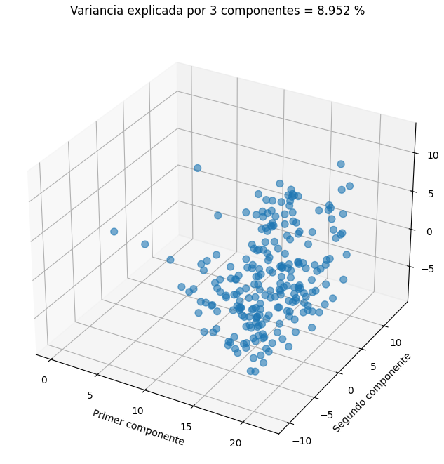

Análisis de datos
Dividida en dos partes, preprocesamiento, la cual se encarga de limpiar y formatear la información de la manera solicitada, y procesamiento principal que es donde se desarrollan los valores y se aplican los algoritmos.
Flujo preprocesamiento
Los pasos del preprocesamiento son los siguientes:
1. Eliminación de stopwords
2. lexematización del texto
3. Eliminación de stopwords
4. Eliminación de verbos
5. Normalización del texto
6. Vectorización con n-gramas
1. Eliminación de stopwords
2. lexematización del texto
3. Eliminación de stopwords
4. Eliminación de verbos
5. Normalización del texto
6. Vectorización con n-gramas
Preprocesamiento: Stop words, lematización y normalización
Empezaremos con la eliminación de las stopwords. Las stopwords son palabras que no nos dan información sobre el contenido de un texto, como conjunciones, artículos, preposiciones y adverbios. Por lo tanto, como nuestro objetivo es solo obtener los temas que el presidente hablo, estas palabras no nos son útiles. La lista de stopwords fue obtenida de la paquetería nltk.
La lematización consiste en reducir las palabras a su forma base o ”lemas”, es decir, a los verbos los reduce a su forma en infinitivo y los sustantivos a su forma singular masculina.
En otras palabras, la lematización es el proceso de encontrar la forma base de una palabra, a partir de su variante flexionada. Como normalización eliminaremos signos de puntación y las mayúsculas, solo dejaremos la n con virgulilla, ya que es una letra mas en el abecedario en español.
También eliminamos los verbos, ya que la mayoría de las palabras que nos dan información sobre el tema que se está tratando son sustantivos, por lo que se pueden obtener mucho mejores resultados si nos olvidamos de los verbos.
La lematización consiste en reducir las palabras a su forma base o ”lemas”, es decir, a los verbos los reduce a su forma en infinitivo y los sustantivos a su forma singular masculina.
En otras palabras, la lematización es el proceso de encontrar la forma base de una palabra, a partir de su variante flexionada. Como normalización eliminaremos signos de puntación y las mayúsculas, solo dejaremos la n con virgulilla, ya que es una letra mas en el abecedario en español.
También eliminamos los verbos, ya que la mayoría de las palabras que nos dan información sobre el tema que se está tratando son sustantivos, por lo que se pueden obtener mucho mejores resultados si nos olvidamos de los verbos.
Preprocesamiento: Vectorización
Por ultimo, vectorizamos los documentos usando la vectorización frecuencia de término – frecuencia inversa de documento, TF-idf por sus siglas en ingles. Con esto, podemos representar los documentos como vectores en un espacio con dimensionalidad alta. Donde cada palabra del documento es considerada como una característica separada o dimensión, y su valor en cada dimensión representa la importancia de cada palabra en el documento. Esto es, al realizar la vectorización obtenemos una matriz nxm, donde n es el numero de documentos y m el tamaño del vocabulario. Entonces, si tomamos la i-ésima fila y la j-ésima columna estaríamos obteniendo la importancia que tiene la palabra j en el documento i.

Para tokenizar las palabras usamos la tokenización Penn Treebank. Incluimos 1-gramas, que son las palabras solas, y 2-gramas, que serian tokens con dos palabras para no perder la información de las palabras compuestas. También incluimos dos parámetros. El primero elimina las palabras que aparecen mas del 70 % de los documento, estas palabras se repiten tanto que no podremos identificarlas solo en uno de los temas. El segundo elimina las palabras que a lo mas aparecen en 2 documentos, al aparecer tan poco son palabras que no presentan una relación estrecha con los temas.Procesamiento: MaxAbs y Keywords
Con el análisis TF-IDF buscamos las 10 palabras clave m ́as importantes de cada documento y los agregamos como una columna en el dataframe.
Creamos instancia de la clase Truncated SVD, despues justamos la transfromacion con nuestros datos utilizando la funcion fit(vector escalado), despues reducimos la dimensionalidad con el método de transform(vector escalado).
Creamos instancia de la clase Truncated SVD, despues justamos la transfromacion con nuestros datos utilizando la funcion fit(vector escalado), despues reducimos la dimensionalidad con el método de transform(vector escalado).
Como podemos ver del análisis de componentes principales, no podemos sacar ninguna conclusión sobre la cantidad de tópicos del corpus.
Proyecto PLN: Universidad de Sonora - 2023